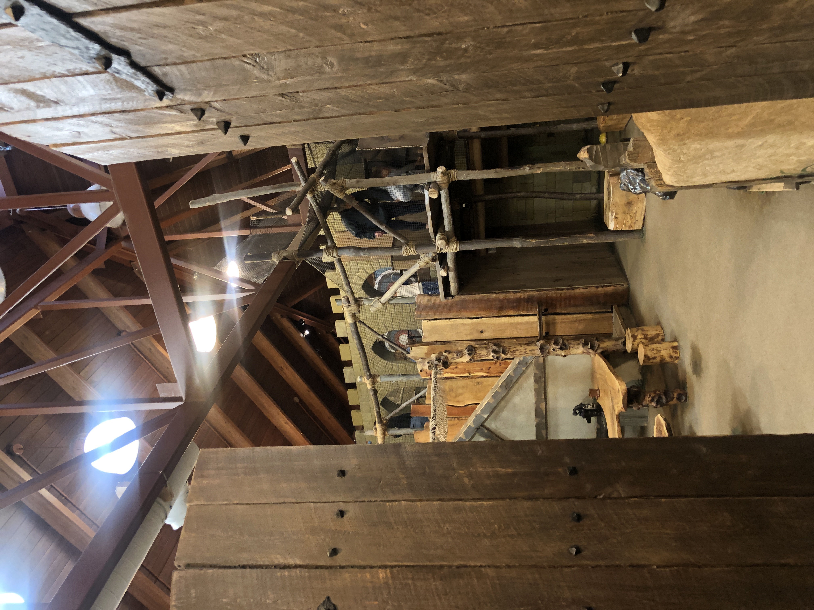
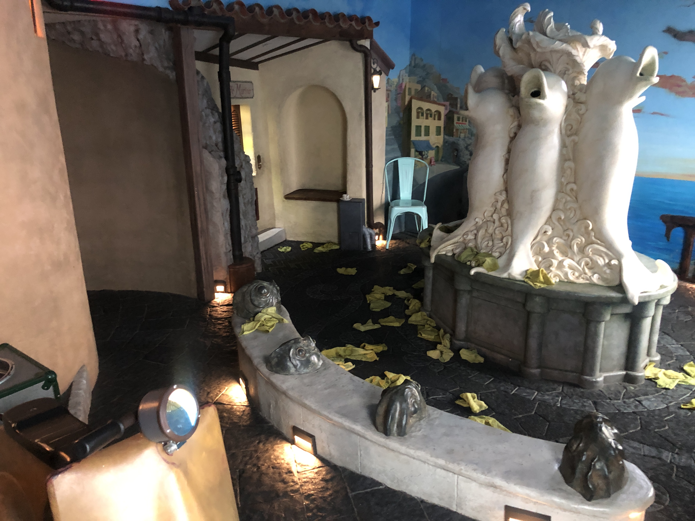
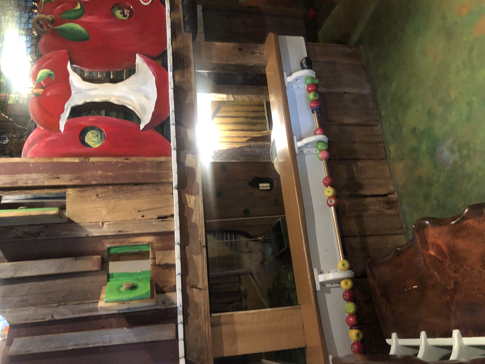

1
Discovery & Research
I began my user research by visiting preschool classrooms to observe how children interact with existing playsets. Through stakeholder interviews with teachers, designers, and children's museum directors, I uncovered recurring frustrations around cooperative play, durability, and inclusivity.
- Classroom observations across 2 preschool sites
- Interviews with 2 educators and 2 designers
- Analysis of existing product lines and safety standards
- Synthesis of pain points into 4 core themes

Observation notes from a preschool play session

Medieval Exhibit from Kidcity Museum in Middletown, CT

Sicillian Exhibit from Kidcity Museum in Middletown, CT

Farm exhibit from Kidcity Museumin Middletown, CT